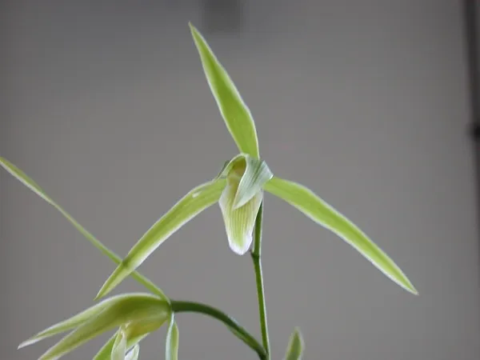
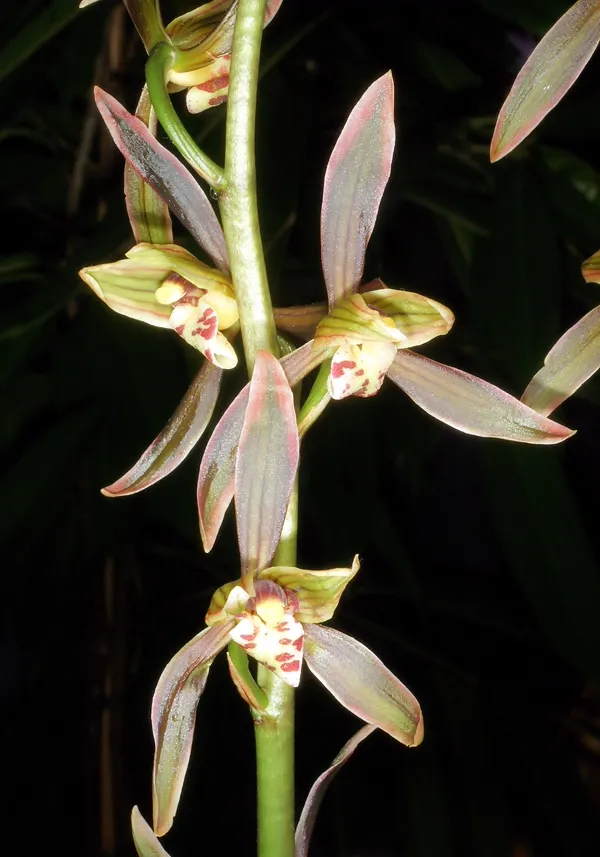

The Five Traditional Chinese Orchids
The five classic cymbidiums of China — each with its own season, character, and centuries of cultivated tradition.
Chunlan · Spring Orchid
Cymbidium goeringii
The most beloved Chinese orchid, blooming in early spring. Its delicate fragrance and elegant single blooms have made it the symbol of the orchid tradition.
Meet Chunlan →Huilan · Noble Orchid
Cymbidium faberi
Tall and stately, blooming in late spring with many flowers per stem. Its upright bearing has earned it the name "noble orchid."
Meet Huilan →Jianlan · Sword Orchid
Cymbidium ensifolium
Blooming in summer and autumn, often twice a year. Its sword-like leaves and resilient nature make it the most forgiving orchid for beginners.
Meet Jianlan →
Hanlan · Cold Orchid
Cymbidium kanran
The winter bloomer. Hanlan flowers open in the cold months with a pure, penetrating fragrance — a quiet treasure of the winter garden.
Meet Hanlan →
Molan · Ink Orchid
Cymbidium sinense
Dark glossy leaves and deep, richly colored blooms — the "ink orchid" of southern China, treasured for its bold beauty and New Year bloom.
Meet Molan →
All Five, Side by Side
Guó lán · 国兰
A complete guide to the five traditional cymbidiums — how to tell them apart, when each blooms, and what makes each one special.
Read the full guide →